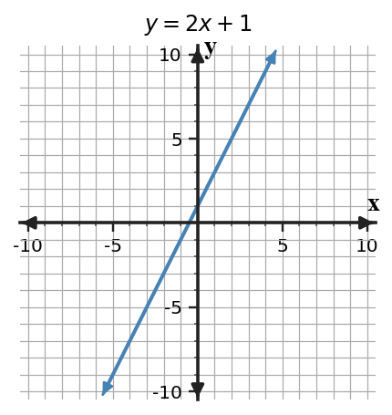

Multiple Representations of Relationships
Core idea: Tables, graphs, equations, and contexts are equivalent only when they preserve the same values and pattern of change.
You will translate among representations and use ordered pairs, starting value, and rate as evidence.
Learning Target
Students will connect tables, graphs, equations, and contexts that represent the same relationship.
I can statements
- I can construct a table, graph, equation, or context from another representation of the same relationship.
- I can use features in one representation to work with a related table, graph, equation, or context.
- I can determine whether two representations belong to the same relationship using evidence from values, rates, or patterns.
Vocabulary / Key Terms
- input-output pair
- coordinate graph
- equation
- rate
- equivalent representation
Preview the terms. Build their meanings from the reading, representations, and examples.
What's To Come
This is a long-range preview for this section. Do not solve it yet. Circle anything familiar, underline symbols, labels, conditions, data, or features that seem important, and write short notes about what you think may matter later.

The graph shows a relationship between time and total distance. Record two ordered pairs from the graph. Then describe one equation or table feature that would have to stay consistent if another representation showed the same relationship.
Teaching note: Facilitate noticing only. Ask what looks familiar, what labels or structure students notice, and what they are unsure about. Do not solve the preview.
Content: Read, Represent, Annotate, Apply
Directions
Read in short chunks. Annotate the prose and representations together. Mark evidence, conditions, important quantities, labels, patterns, and questions.
Reading: What stays the same when the representation changes?
A relationship connects an input quantity to an output quantity. A table records a selected input-output pair at a time, a coordinate graph plots those pairs as points, and an equation describes a rule connecting the quantities. A verbal context gives the quantities meaning and units.
When two forms describe the same relationship, each new form is an equivalent representation. They do not need to look alike, but they must agree on the values they represent. A point such as $(2,7)$ must mean the same input and output wherever that relationship appears.
For a constant-change relationship, the rate tells how much the output changes for each unit of input. The starting value is the output at input $0$ when that input belongs to the situation. Those two features often let you connect a table, graph, equation, and context efficiently.
Stop and Discuss
- How can the ordered pair $(2,7)$ be located in a table, graph, and equation check?
- Why is graph appearance alone weak evidence that two representations match?
Teacher answer: Expected reasoning: the same pair is a table column/row entry, a plotted point, and a successful substitution. Visual steepness alone is unreliable because axis scales can change.
$y=mx+b$
$m$ is the constant rate; $b$ is the output at $x=0$.
| $x$ | $y$ |
|---|---|
| 0 | $b$ |
| 1 | $m+b$ |
| 2 | $2m+b$ |

Example 1: Build a Rule from a Table
A table has $x=0,1,2,3$ and $y=4,7,10,13$. Write a rule and identify the starting value and constant rate.
Teacher answer: Answer: The rule is $y=3x+4$; starting value 4; rate 3.
You Try It 1: Find the Rate and Starting Value
A related table has $x=0,1,2,3$ and $y=-2,2,6,10$. Write a rule and identify the starting value and constant rate.
Teacher answer: Answer: The rule is $y=4x-2$; starting value -2; rate 4.
Example 2: Translate a Graph into an Equation

The graph shown crosses the $y$-axis at 4 and falls 1 unit for every 1 unit moved right. Write an equation for the line and give one point that must lie on it.
Teacher answer: Answer: $y=-x+4$; examples include $(0,4)$ and $(2,2)$.
You Try It 2: Write a Line from Intercept and Rate
A line has $y$-intercept -3 and rises 2 units for every 1 unit moved right. Write its equation and list two points on the line.
Teacher answer: Answer: $y=2x-3$; examples include $(0,-3)$ and $(2,1)$.
Reading: Move between a context, an equation, and values
A context often separates naturally into a fixed amount and a repeated amount. A signup fee is paid once, so it behaves like a starting value. A cost per month, meeting, mile, or item repeats, so it behaves like a rate.
An equation makes that structure compact. If a service begins with a $6$-dollar charge and adds $4$ dollars each month, $C=4m+6$ connects months $m$ to total cost $C$. Substituting several month values produces ordered pairs for a table or graph.
Units help you decide which number plays which role. Dollars per month is a rate; dollars is an amount. Keeping the units attached to the meaning of each quantity reduces accidental swaps when you translate a situation into symbols.
Stop and Discuss
- In a fixed-fee-plus-rate situation, how can units help identify the rate?
- If $C=4m+6$, what does the pair $(0,6)$ mean in context?
Teacher answer: Expected reasoning: a rate carries compound units such as dollars per month; $(0,6)$ means the total is $6$ dollars before any monthly charges accumulate.
Example 3: Model a Fixed Charge and Repeated Cost
A streaming service has a 6-dollar signup charge and costs 4 dollars per month. Write an equation for total cost $C$ after $m$ months and make a three-row table.
Teacher answer: Answer: $C=4m+6$; for example $(0,6),(1,10),(2,14)$.
You Try It 3: Build a Cost Rule from Context
A club charges 9 dollars to join and 5 dollars per meeting. Write an equation for total cost $T$ after $n$ meetings and give three ordered pairs.
Teacher answer: Answer: $T=5n+9$; for example $(0,9),(1,14),(2,19)$.
Reading: Use evidence to test whether representations match
To test a proposed match, choose an input and compare the outputs. If one ordered pair from a table fails the equation, the two representations cannot describe the same relationship. One clear contradiction is enough to reject the match.
When values do match, check more than one point and also look at structure. For a constant-rate relationship, compare the starting value and repeated change. This gives stronger evidence than saying two pictures or stories “look similar.”
A useful algebra habit is to make the evidence visible. Show the substitution, calculate the output, and compare it with the proposed value. That short record makes your conclusion checkable by someone else.
Stop and Discuss
- Why can one failed substitution prove that two representations are not equivalent?
- What two structural features are especially useful when checking a constant-rate relationship?
Teacher answer: Expected reasoning: equivalent representations must agree for every allowed input, so one mismatch disproves equivalence. Starting value and constant rate are efficient structural checks.
Example 4: Check a Proposed Matching Table
One representation is $y=5x-1$. A proposed matching table contains $(0,-1),(1,4),(2,10)$. Does the table match the equation? Explain.
Teacher answer: Answer: No. When $x=2$, the equation gives $y=9$, not 10.
You Try It 4: Verify a Table Against an Equation
A table contains $(0,3),(2,9),(4,15)$. Does $y=3x+3$ represent the same relationship? Justify with at least two values.
Teacher answer: Answer: Yes. Each listed input gives the corresponding output under $y=3x+3$.
Vocabulary / Key Terms — Definitions
| Term | Meaning |
|---|---|
| input-output pair | an ordered pair that links an input value to its corresponding output |
| coordinate graph | a representation that plots ordered pairs on horizontal and vertical axes |
| equation | a mathematical statement that can express a rule connecting quantities |
| rate | change in output compared with a change in input |
| equivalent representation | a different form that preserves the same relationship |
Summary
- A relationship may be represented with a table, graph, equation, or context.
- Equivalent representations preserve the same ordered pairs and mathematical structure.
- For constant-change relationships, starting value and rate are strong connection points.
- Substitution provides direct evidence for checking whether representations match.
Synthesis: ask students to name one feature that survives every representation change and one method for checking a proposed match.
Common Mistakes
| Mistake | Why it is tempting | Check instead |
|---|---|---|
| Matching by appearance only | Two graphs can look similar under different scales. | Check coordinates, starting value, and rate. |
| Swapping the fixed amount and rate | Both numbers may appear together in a context. | Use units and ask which amount repeats. |
| Ignoring one mismatched value | Most values may appear to fit. | A single failed ordered-pair check disproves equivalence. |